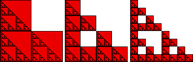

| We cover a shape with boxes of side lengths r1, r2, r3, ...,
with r1 > r2 > r3 > ... , with the hope that
smaller boxes will pick up finer details. |
|  |
| Count the numbers N(r1), N(r2), N(r3), ... of these boxes. We hypothesize a
power-law scaling |
| N(ri) = k⋅(1/ri)d |
| Taking log of both sides and simplifying, we obtain |
| log(N(ri)) = d⋅log(1/ri) + log(k) |
| the equation of a straight line, with log(N(ri)) on the
y-axis and log(1/ri) on the x-axis. |
| If the power-law scaling is correct, the points will lie on a straight line, and the slope
of that line id the box-counting dimension db. |
| |
| If we can find a formula for N(ri), then we can find db by taking
the limit |
| db = limri → 0log(N(ri))/log(1/ri) |
| Both methods are illustrated for the gasket here. |